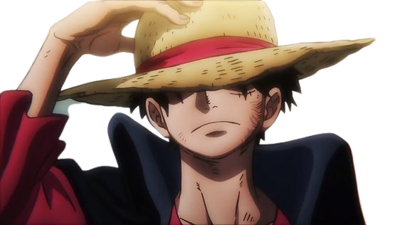

About One Piece
One Piece is a Japanese manga series written and illustrated by Eiichiro Oda. It has been serialized in Shueisha's shōnen manga magazine Weekly Shōnen Jump since July 1997, with its individual chapters compiled into 106 tankōbon volumes as of July 2023. The story follows the adventures of Monkey D. Luffy, a young man who gains the ability to stretch his body like rubber after unintentionally eating a Devil Fruit. With his crew of pirates, named the Straw Hat Pirates, Luffy explores the Grand Line in search of the world's ultimate treasure known as "One Piece" in order to become the next Pirate King. One Piece is one of the best-selling manga series of all time, with over 490 million copies sold worldwide. It has also been adapted into an anime series, which is the longest-running anime series of all time. The anime series has been praised for its animation, humor, and action. One Piece is a story about adventure, friendship, and dreams. It is a story that has captured the hearts of millions of fans around the world. If you are looking for a manga or anime series that is full of excitement, humor, and heart, then One Piece is definitely worth checking out. Here are some additional details about One Piece that you may want to include in your About section:
- The series is set in a world where pirates rule the seas.
- Luffy's crewmates are a diverse group of characters, each with their own unique abilities.
- Luffy and his crew have faced many challenges on their journey, but they have always emerged victorious.
- The series is full of humor, action, and adventure.
- One Piece is a story about following your dreams and never giving up.
Monkey.D.Luffy

Monkey D. Luffy is the main protagonist of the popular manga and anime series One Piece. He is the captain of the Straw Hat Pirates and dreams of becoming the Pirate King. Luffy is a young man with a rubber body, which he gained after accidentally eating the Gomu Gomu no Mi Devil Fruit. He is also a Haki user, which gives him the ability to sense the presence of others and to attack them without touching them.
Luffy is a kind and optimistic person, but he is also very stubborn and impulsive. He is always willing to fight for what he believes in, even if it means putting himself in danger. Luffy is also a great leader, and he is always willing to put the needs of his crewmates before his own.
Luffy is a very popular character, and he has been praised for his positive attitude and his never-give-up attitude. He is a role model for many people, and he inspires them to follow their dreams.
Roronoa Zoro
 Roronoa Zoro is one of the main characters in the popular manga and anime series One Piece. He is the first crewmate to join the Straw Hat Pirates, and he is the combatant of the crew. Zoro is a skilled swordsman who dreams of becoming the World's Strongest Swordsman. He is also a Haki user, which gives him the ability to sense the presence of others and to attack them without touching them.
Roronoa Zoro is one of the main characters in the popular manga and anime series One Piece. He is the first crewmate to join the Straw Hat Pirates, and he is the combatant of the crew. Zoro is a skilled swordsman who dreams of becoming the World's Strongest Swordsman. He is also a Haki user, which gives him the ability to sense the presence of others and to attack them without touching them.
Zoro is a tall, muscular man with a black ponytail and three gold earrings on his left earlobe. He always wears a green haramaki over his right hip, which he uses to hold his three swords. Zoro is also known for his poor sense of direction, which has gotten him into trouble on multiple occasions.
Zoro is a very serious and dedicated individual. He is always training to improve his swordsmanship, and he is always willing to fight for his friends. Zoro is also very loyal to Luffy, and he would do anything to protect him.
Zoro is one of the most popular characters in One Piece. He is a fan favorite for his cool personality, his badass skills, and his determination to achieve his goals. He is also a very relatable character, as he is often struggling with his own weaknesses.
Vinsmoke Sanji
Vinsmoke Sanji, also known as "Black Leg" Sanji, is one of the main characters in the popular manga and anime series One Piece. He is the fifth crewmate to join the Straw Hat Pirates, and he is the cook of the crew. Sanji is a skilled chef who dreams of finding the All Blue, a legendary sea that is said to contain all the fish in the world.
Sanji is a tall, muscular man with blond hair and blue eyes. He has a distinctive eyebrow curl on each side of his face, which is a family trait of the Vinsmokes. Sanji is also known for his signature style of fighting, which uses his legs instead of his hands.
Sanji is a kind and gentle person, but he is also very protective of his friends. He is always willing to help those in need, and he is always willing to fight for what he believes in. Sanji is also very loyal to Luffy, and he would do anything to protect him.
Sanji is one of the most popular characters in One Piece. He is a fan favorite for his cool personality, his badass skills, and his chivalry. He is also a very relatable character, as he is often struggling with his own weaknesses.